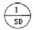
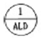
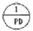
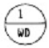
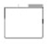
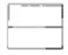
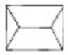

실내건축기능사 (2002-04-07 기출문제)
1과목: 실내디자인
1. 주거나 주거지 공간을 기능적으로 꾸미는 디자인은?
- 환경디자인
- 실내디자인
- 공업디자인
- 시각디자인
(정답률: 99%)

2. 기하학적인 정의로 볼 때 크기는 없고 위치만 가지고 있는 요소는?
- 선
- 점
- 면
- 입체
(정답률: 93%)
3. 천장, 벽의 구조체에 의해 광원의 빛이 천장 또는 벽면으로 가려지게 하여 반사광으로 간접조명하는 방식은?
- 루버(Louver)조명
- 코브(Cove)조명
- 코너(Corner)조명
- 광천장조명
(정답률: 63%)
4. 엄숙, 단정, 신앙, 희망 등의 느낌을 갖는 선은?
- 수평선
- 수직선
- 사선
- 포물선
(정답률: 79%)
5. 실내디자인을 할 때 리듬감을 주는 방법으로 가장 좋은 디자인 구성원리는?
- 대칭
- 반복
- 유사조화
- 액센트(accent)
(정답률: 78%)
6. 실내 공간의 바닥을 설계할 때 내용으로 틀린 것은?
- 신체와 직접 접촉되는 부분이므로 촉감을 고려한다.
- 바닥의 면적이 좁을 때에는 바닥에 높이차를 두어 공간을 넓게 보이게 한다.
- 노인이 있는 실내에서는 바닥의 높이차가 없는 것이 좋다.
- 바닥에 높이차를 두면 공간을 분할하는 효과가 있다.
(정답률: 81%)
7. 실내투시도 작도시의 용어 설명으로 옳은 것은?
- G.L : 수평선
- H.L : 소점
- E.L : 바닥선
- S.P : 관찰자의 위치
(정답률: 55%)
8. 사회 심리학자인 알트만(Altman)이 분류한 공간의 개념이라 할 수 없는 것은?
- 개인공간
- 환경성
- 프라이버시
- 영역성
(정답률: 64%)
9. 천장면이 넓어져 공간이 커 보이게 하며, 또 사선의 효과가 있어서 동적인 느낌을 주는 것은?
- 높은 천장
- 낮은 천장
- 평천장
- 경사천장
(정답률: 75%)
10. 가구배치시 주의사항이 아닌 것은?
- 가구는 실의 중심부에 배치하여 돋보이게 한다.
- 사용 목적과 행위에 맞는 가구배치를 해야 한다.
- 전체 공간의 스케일과 시각적, 심미적 균형을 이루도록 한다.
- 문이나 창문이 있을 경우 높이를 고려한다.
(정답률: 82%)
11. 원룸주택의 출현이유로 옳지 않은 것은?
- 집값의 상승
- 독신세대의 증가
- 사회문화의 변화
- 주택보다 편리함
(정답률: 64%)
12. 실내디자인의 방법으로 적절하지 못한 것은?
- 평면과 단면, 입면을 동시에 고려한다.
- 과거의 설계사례는 고려하지 않는다.
- 인간의 행동과 생활방법에서 발상을 얻는다.
- 시선의 움직임과 흐름을 고려한다.
(정답률: 83%)
13. 실내 디자인을 통해서 쾌적한 환경을 구성하고 보다 아름다운 공간을 창조한다. 다음 중 실내디자인이 사람에게 주는 기능이 아닌 것은?
- 미적기능
- 경제적기능
- 심리적기능
- 물리적기능
(정답률: 52%)
14. 다음 중 면에 대하여 바르게 설명한 것은?
- 점의 궤적이다.
- 위치를 나타낸다.
- 길이와 방향성이 있다.
- 선이 이동한 궤적이다.
(정답률: 66%)
15. 주거공간의 동선에 관한 설명으로 틀린 것은?
- 동선은 사람의 생활 동작이 연속되는 경로를 말한다.
- 주 생활공간 상호간의 동선관계는 상충되거나 방해되지 않도록 한다.
- 동선은 가능한 길고 직선으로 효율적이고 복잡하게 계획한다.
- 가사실은 가장 일을 많이하는 공간으로 동선을 효율적으로 설계한다.
(정답률: 90%)
16. 다음 중 필요환기량을 계산하는 환기량의 단위는?
- m3/h
- m2/h
- 회/h
- g/m3
(정답률: 39%)
17. 일정한 오목면과 볼록면을 가진 표면에 음파가 부딪치게 되면 음 분포를 가진 여러개의 작고 약한 파형으로 나누어 지게 되는데 이러한 현상을 무엇이라 하는가?
- 음의 반사
- 음의 확산
- 음의 회절
- 실의 공명
(정답률: 47%)
18. 결로 방지대책과 관계가 먼 것은?
- 환기
- 난방
- 단열
- 방수
(정답률: 77%)
19. 일조의 직접적인 효과로 볼 수 없는 것은?
- 광 효과
- 증발 효과
- 열 효과
- 보건적 효과
(정답률: 32%)
20. 벽체의 열관류량에 영향을 주는 것으로 거리가 먼 것은?
- 벽체의 무게
- 벽체 내외의 온도차
- 벽체의 표면적
- 시간
(정답률: 62%)
2과목: 실내환경
21. 다음 중 합판의 특성을 설명한 내용 중 옳지 않은 것은?
- 단판을 서로 직교시켜서 붙인 것이므로 잘 갈라지지 않으나 방향에 따른 강도의 차가 많다.
- 단판은 얇아서 건조가 빠르고, 뒤틀림이 없으므로 팽창, 수축을 방지할 수 있다.
- 아름다운 무늬가 되도록 얇게 벗긴 단판을 합판 양표면에 사용하면 무늬가 좋은 판을 얻을 수 있다.
- 나비가 큰 판을 얻을 수 있고, 쉽게 곡면판으로 만들 수가 있다.
(정답률: 44%)
22. 콘크리트, 모르타르 바탕에 아스팔트 방수층 또는 아스팔트 타일 붙이기 시공을 할 때의 초벌용 재료는?
- 아스팔트 프라이머
- 블로운 아스팔트
- 스트레이트 아스팔트
- 아스팔트 펠트
(정답률: 62%)
23. 다음 콘크리트 제품 중 원심력 가공에 의해 생산되는 제품은?
- 철근콘크리트 말뚝
- 목모 시멘트판
- 가압시멘트판 기와
- 시멘트 블록
(정답률: 53%)
24. 탄소강에 함유된 탄소량이 증가함에 따라 강의 성질에 주는 영향 중 잘못된 것은?
- 비중의 감소
- 열팽창계수의 감소
- 비열의 증가
- 내식성의 증가
(정답률: 42%)
25. 유리의 종류 중 결로현상이 가장 일어나지 않는 것은?
- 복층유리
- 강화유리
- 접합유리
- 일반유리
(정답률: 72%)
26. 다음 중 가장 빠른 강도를 발휘하는 시멘트는?
- 플라이 애시 시멘트
- 팽창 시멘트
- 조강 시멘트
- 제트 시멘트
(정답률: 34%)
27. 비중(比重)에 대한 설명으로 옳은 것은?
- 중량이 1g인 재료를 1℃ 높이는 데 필요한 열량을 말한다.
- 재료에 외력이 작용하였을 때 그 외력에 저항하는 능력을 말한다.
- 재료의 중량을 그와 동일한 체적의 4℃인 물의 중량 으로 나눈 값을 말한다.
- 재료가 외력을 받아도 잘 변형되지 않는 성질을 뜻한다.
(정답률: 44%)
28. 겨울철 콘크리트 시공에 적합한 콘크리트는?
- 산화알루미늄시멘트
- 팽창시멘트
- 포틀랜드포졸란시멘트
- 고로슬래그시멘트
(정답률: 34%)
29. 다음 발포 제품 중 현장 발포가 가능한 것은?
- 염화비닐 폼
- 폴리에틸렌 폼
- 페놀 폼
- 폴리우레탄 폼
(정답률: 62%)
30. 목재의 부패에 관한 설명 중 옳지 않은 것은?
- 대부분의 부패균은 25∼35℃ 사이에서 가장 활동이 왕성하고, 4℃이하에서는 발육할 수 없다.
- 습도는 90% 이상으로 목재의 함수율이 30∼60%일 때 균의 발육이 적당하다.
- 충분히 건조된 것 또는 아주 젖어 있는 생나무는 잘 부식되지 않는다.
- 완전히 수중에 잠긴 목재는 잘 부패된다.
(정답률: 54%)
3과목: 실내건축재료
31. 시멘트의 응결 및 경화에 관한 설명 중 옳지 않은 것은?
- 혼합용 물이 많으면 응결, 경화가 빠르다.
- 온도와 습도가 높으면 응결시간이 짧아진다.
- 시멘트의 분말도가 높으면 응결, 경화속도가 빨라진다.
- 우리나라 보통포틀랜드 시멘트의 응결시작은 대략 4시간 전후, 끝은 6시간 전후이다.
(정답률: 45%)
32. 목재의 흠에 대한 설명으로 옳지 않은 것은?
- 산옹이는 썩은옹이에 비하여 목재로 사용하는데 별로 지장이 없다.
- 벌목할 때나 운반할 때 상처가 생길 수 있다.
- 수목이 성장할 때 껍질이 상해서 껍질의 일부가 상처안으로 말려 들어간 것을 지선이라 한다.
- 부패균이 목재의 내부에 침입하여 섬유를 파괴시켜서 갈색이나 흰색으로 변색, 부패된 것을 썩정이라 한다.
(정답률: 53%)
33. 목재의 이용에 대한 설명으로 옳지 않은 것은?
- 목재를 얻을 수 있는 취재율은 활엽수가 침엽수보다 많다.
- 나무의 벌목 적령기는 전수명의 2/3 정도의 장목기가 좋다.
- 목재의 벌목시기로는 겨울을 선택하는 경우가 많다.
- 목재의 재적 단위로는 m3가 표준 단위로 쓰인다.
(정답률: 26%)
34. 원료인 점토에 톱밥이나 분탄 등의 불에 탈 수 있는 가루를 혼합하여 성형, 소성하여 톱질과 못박기가 가능하고 단열 및 방음성이 있는 벽돌은?
- 다공질 벽돌
- 경량벽돌
- 포도벽돌
- 점토벽돌
(정답률: 60%)
35. 슬럼프 테스트의 목적은 무엇인가?
- 콘크리트의 강도를 측정하는 시험이다.
- 재료분리를 측정하는 시험이다.
- 공기량을 측정하는 시험이다.
- 시공연도를 측정하는 시험이다.
(정답률: 43%)
36. 목재를 이음 할 때 전단력에 대한 저항 작용을 목적으로 사용하는 철물은?
- 꺾쇠
- 듀벨
- 클램프
- 주걱볼트
(정답률: 62%)
37. 색깔이 회색 또는 담홍색이고, 비중은 0.7∼0.8로서 석재중 가장 가벼워 경량콘크리트용 골재, 열전도율이 작고 내화성이어서 단열재나 내화피복재 등으로 쓰이는 석재는?
- 화강암
- 부석
- 트래버틴
- 대리석
(정답률: 40%)
38. 기둥모서리 및 벽 모서리 면에 미장을 쉽게하고 모서리를 보호할 목적으로 설치하는 것은?
- 조이너
- 코너비드
- 논슬립
- 와이어라스
(정답률: 70%)
39. 접착성이 우수하여 금속, 유리, 플라스틱, 도자기, 목재,고무 등에 쓰이고 특히 알루미늄과 같은 경금속의 접착에 가장 좋은 것은?
- 에폭시 수지
- 요소 수지
- 폴리에스테르 수지
- 멜라민 수지
(정답률: 53%)
40. 주로 목재면의 투명 도장에 쓰이는 것은?
- 에나멜 래커
- 광명단
- 클리어 래커
- 연단 도료
(정답률: 57%)
41. 철재문을 나타내는 표시기호로 적합한 것은?




(정답률: 53%)
42. 반지름의 제도표시 기호는?
- ø
- R
- T
- S
(정답률: 69%)
43. 가장 큰 원을 그릴 수 있는 컴퍼스는?
- 스프링 컴퍼스
- 드롭 컴퍼스
- 비임 컴퍼스
- 중형 컴퍼스
(정답률: 47%)
44. 조적조 건축물의 내력벽 길이가 얼마를 초과할 때 중간에 붙임기둥이나 부축벽을 만들어 보강하는가?
- 5m
- 10m
- 15m
- 20m
(정답률: 44%)
45. 다음 지붕평면도에서 박공지붕은?



(정답률: 49%)
46. 기둥의 띠철근 간격으로 옳은 것은?
- 기둥의 최소폭 이상
- 띠철근 지름의 16배 이하
- 축방향 철근 지름의 48배 이하
- 30cm 이하
(정답률: 31%)
47. 너트를 강하게 죄어 볼트에 강한 인장력이 생기게 하여 그 인장력의 반력으로 접합된 판 사이에 강한 압력이 작용하여 이에 의한 접합재간의 마찰저항에 의하여 힘을 전달하는 접합방식은?
- 리벳접합
- 고력볼트접합
- 핀접합
- 용접접합
(정답률: 68%)
48. 철근콘크리트 구조에서 기둥단면의 최소한도는?
- 최소단면치수 20cm 이상, 최소단면적은 500㎝2 이상
- 최소단면치수 30cm 이상, 최소단면적은 600㎝2 이상
- 최소단면치수 20cm 이상, 최소단면적은 600㎝2 이상
- 최소단면치수 30cm 이상, 최소단면적은 700㎝2 이상
(정답률: 40%)
49. 프리스트레스트 콘크리트 구조에 관한 설명 중 틀린 것은?
- 간사이가 비교적 짧다.
- 부재 단면의 크기를 작게 할 수 있다.
- 구조물이 비교적 가볍고 강하며 복원성이 우수하다.
- 강도와 내구성이 큰 구조물을 만들 수 있다.
(정답률: 36%)
50. 설계도면에 사용되는 문자의 크기를 나타내는 기준은?
- 길이
- 폭
- 높이
- 굵기
(정답률: 45%)
4과목: 건축일반
51. 건축 구조형식에 따른 분류 중 가구식 구성방법에 속하는 구조는?
- 철근콘크리트조
- 벽돌조
- 철골조
- 블록조
(정답률: 48%)
52. 다음 구조 중 가장 강력하고 균일한 강도를 낼 수 있는 합리적인 구조체는?
- 벽돌구조
- 목구조
- 철근 콘크리트구조
- 블록구조
(정답률: 75%)
53. 다음 중 평면도에 나타나지 않는 것은?
- 처마높이
- 실의 면적
- 개구부의 위치나 크기
- 창문과 출입구의 구별
(정답률: 64%)
54. 철근콘크리트 보에서 늑근간격이 가장 좁은 곳은?
- 보의 중앙부
- 보의 1/4부분
- 보의 양단부
- 보의 3/4부분
(정답률: 46%)
55. 도면의 종류 중 실시 설계도를 설명한 것은?
- 기본설계도를 기준으로 만들어지고 건축물의 시공에 필요한 여러가지 도면
- 설계자가 건물의 기본구상을 연구하기 위한 도면
- 건축주와의 교섭용으로 사용되는 도면
- 건물의 기능이나 규모 및 표현을 결정하기 위한 도면
(정답률: 54%)
56. 지반위의 콘크리트 바닥판의 수축균열 방지를 위하여 설치하는 줄눈은?
- 신축줄눈
- 시공줄눈
- 조절줄눈
- 부착줄눈
(정답률: 28%)
57. 보의 유효춤은 기둥간격의 얼마로 하는가?
- 1/2 ∼ 1/4
- 1/5 ∼ 1/8
- 1/10 ∼ 1/15
- 1/16 ∼ 1/19
(정답률: 54%)
58. 물시멘트비와 가장 관계가 깊은 것은?
- 분말도
- 중량
- 하중
- 강도
(정답률: 43%)
59. 건축물의 구성 요소들이다. 이들 중 보나 도리 바닥판과 같은 가로재의 하중을 받아 기초에 전달하는 부분은?
- 기둥
- 바닥
- 지붕
- 수장재
(정답률: 59%)
60. 콘크리트 슬랩 위에 바로 멍에를 걸거나 장선을 대어 짠마루틀로 사무실, 판매장과 같이 출입이 편리하게 마루의 높이를 낮출 때 쓰는 마루는?
- 납작마루
- 홑마루
- 짠마루
- 겹마루
(정답률: 38%)